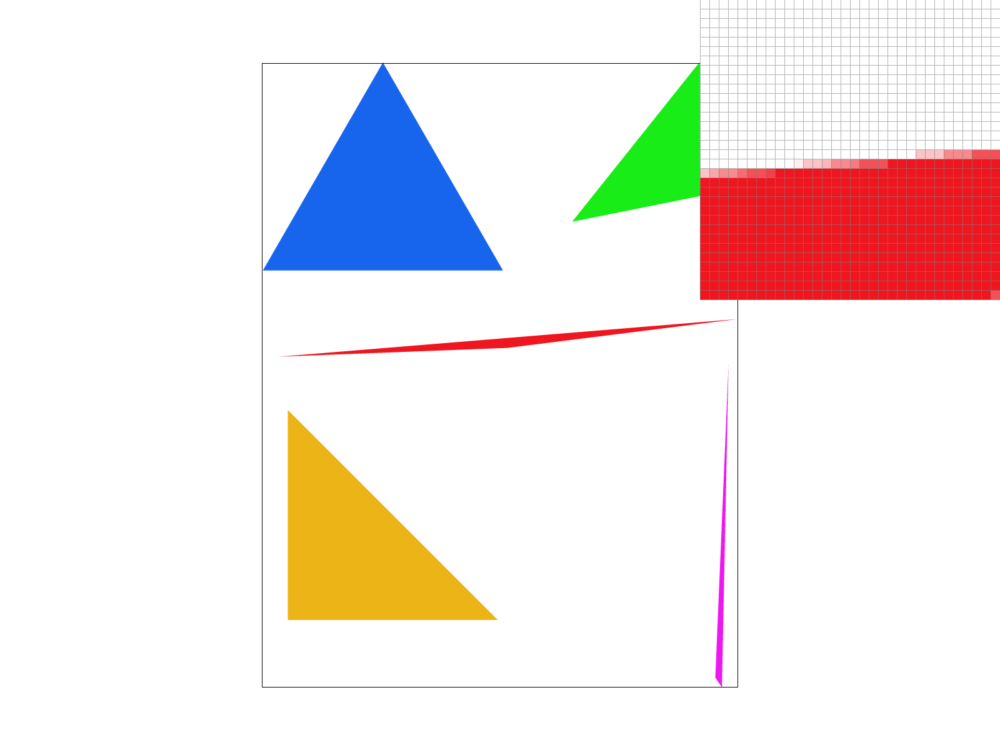
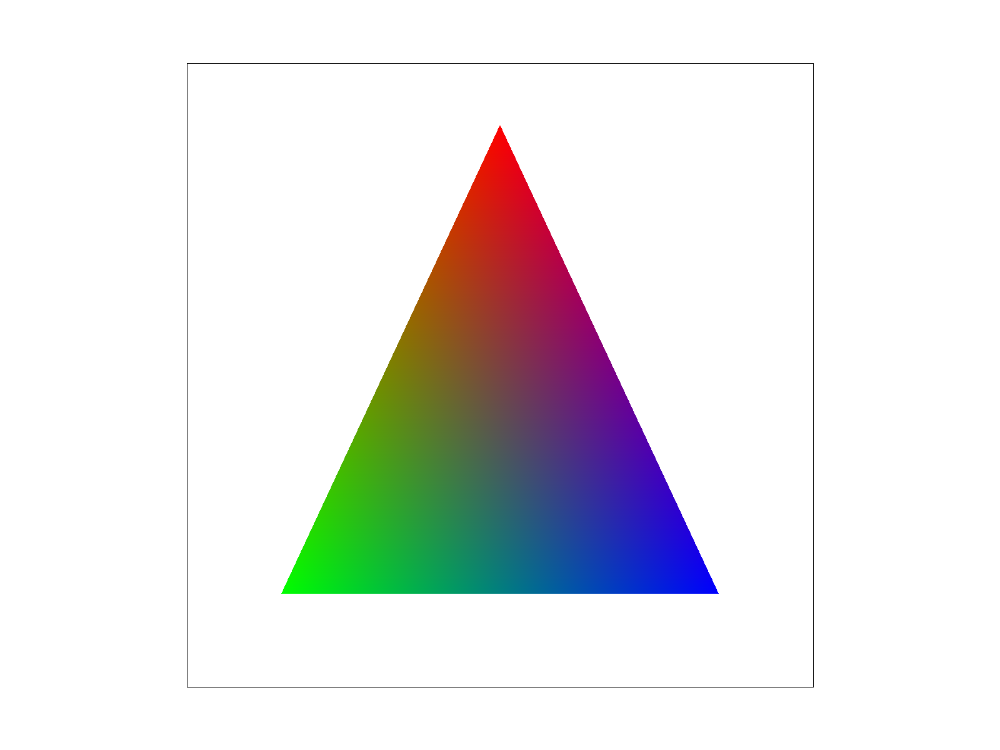
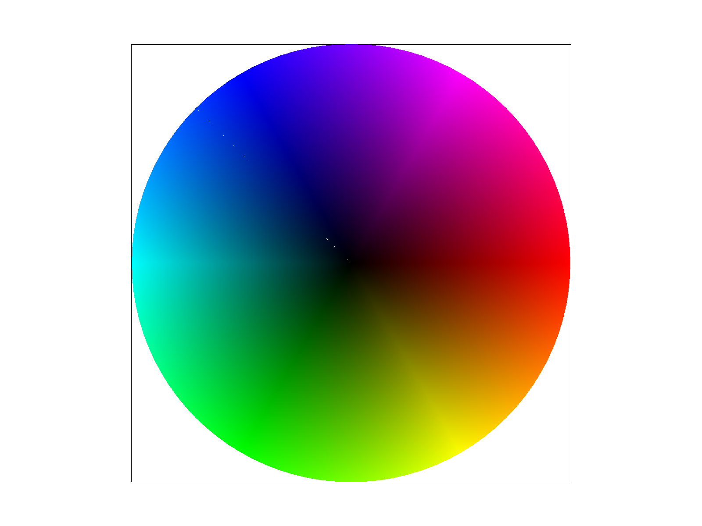
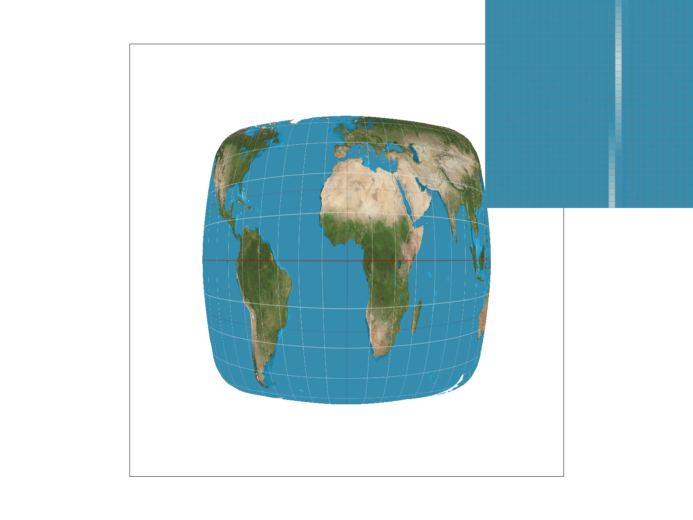
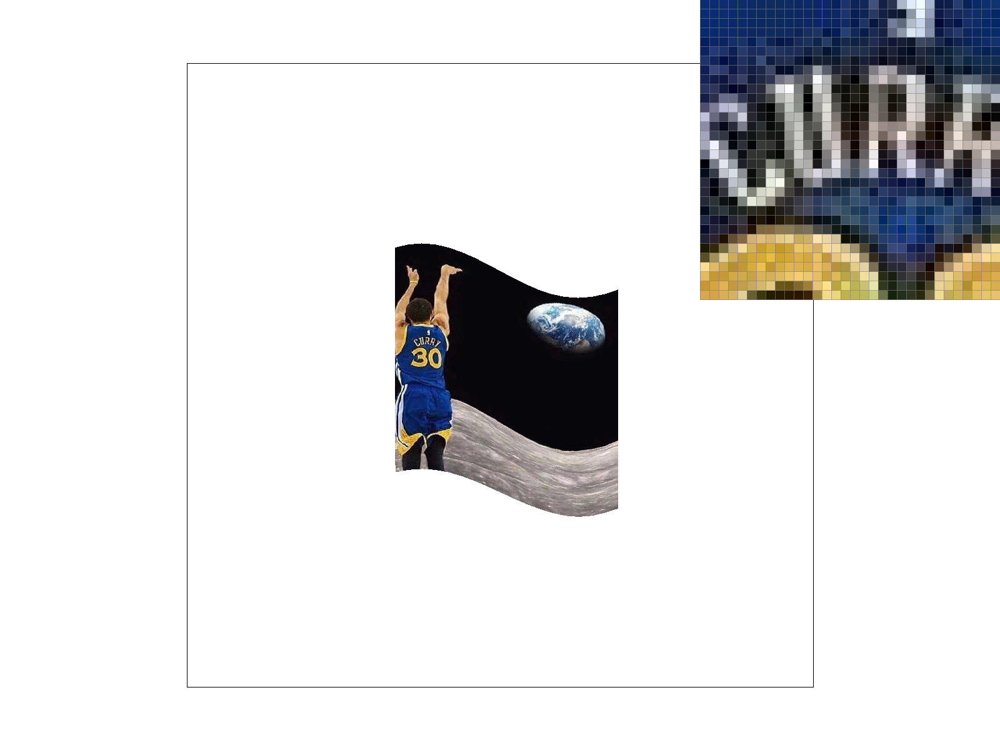
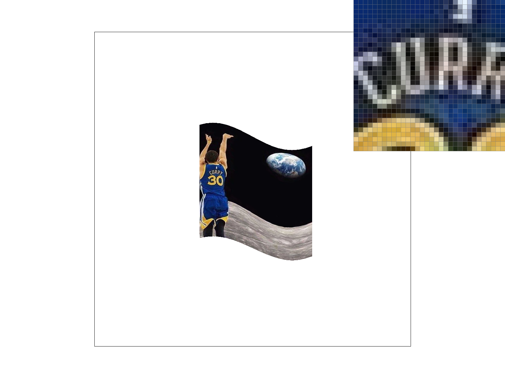
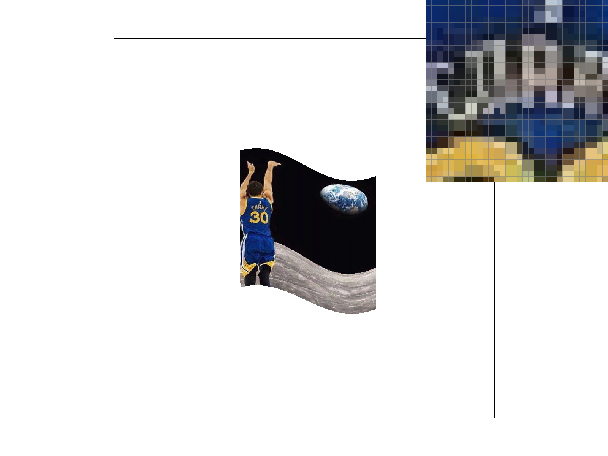
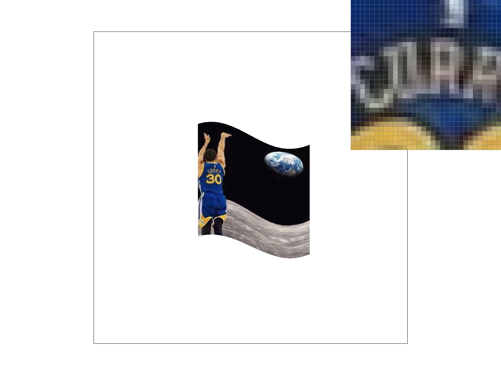

CS184/284A Spring 2026 Homework 1 Write-Up
Link to webpage: TODO
Link to GitHub repository: TODO
Overview
In this homework, I implemented a Rasterizer in C++ that utilizes supersampling with antialiasing, via various pixel and mipmap level sampling techniques! To be more specific, I implemented the following:
- Winding-agnostic Triangle Rasterization
- supersampling for antialiasing
- barycentric coordinates and homogenous transforms
- Nearest neighbor sampling
- Texture mapping with nearest neighbor/bilinear sampling
- Mipmapping with level sampling
Task 1: Drawing Single-Color Triangles
I computed a minimal bounding box around the triangle using the minimum and maximum x and y coordinates combined from any of its vertices, then iterated through each pixel in this bounding box. For each pixel, I sample in the center by offsetting x and y by 0.5 (as per the spec), then check if the point is inside the triangle using the line equations from lecture 2. If the point is on the inside of all 3 edges (if all signs are equal, to handle both winding orders +-), the pixel is colored.
The algorithm I've implemented directly computes the bounding box of the triangle (min x, min y) to (max x, max y) and then iterates through each pixel in the bounding box to check if the pixel is inside the triangle. As a result, we iterate over exactly the points in the bounding box of the triangle.

Task 2: Antialiasing by Supersampling
In the previous task, I sampled a single time at the center of each pixel. Here, I took a square grid of samples across the pixel area, where each subsample gets its own edge test and is written to the sample_buffer. The sample_buffer is enlarged to account for this increased "sample rate", i.e. the size of the grid of samples per pixel. Now, the sample buffer is of dimension width * height * sample_rate. To account for this, I updated fill_pixel to fill all sub-samples, and average across the subsamples for the final color in the pixel in resolve_to_framebuffer. This allows us to get a form of anti-aliasing on sharp edges, as pixels that are partly within the triangle will have an intermediate color (averaged between the samples within and outside the triangle), smoothing jaggy edges!
|
|
|

|
We can see that as we increase the sample rate, the slightly diagonal edge of the red triangle becomes smoother and smoother, as we use a finer and finer grid of samples per pixel! This effectively smoothens the edges.
Task 3: Transforms
he wave!
Task 4: Barycentric coordinates
Barycentric coordinates allow us to define coordinates relative to the three vertices of a triangle, by defining a point as a weighted average of the vertices' coordinates. This allows us to more naturally check whether a point is inside a triangle, by seeing if the point's barycentric coordinates sum to 1 and are all positive. This also allows us to treat the triangle as a smooth interpolation region, allowing is to smoothly interpolate colors (and presumably textures as well, e.g. normals) between vertices! In this task, this is represented by smoothly interpolated color maps.
|

|

|
Task 5: "Pixel sampling" for texture mapping
Pixel sampling is just looking up a color from a texture, given a (u, v) coordinate. Nearest neighbor sampling just looks at the closest texel to the provided u, v values, while bilinear looks at the four surrounding texels (as u, v do not have to be integers, and could be between texels) and interpolates between them.
|
|
|
|

|
|
We can see that at 1 sample per pixel, the nearest neighbor sampling struggles to connect a gridline that is intended to be continuous, while the biliniear sampling does a much better job at smoothening it out and giving the illusion of continuity. On the other hand, at 16 samples per pixel, the difference between the sampling methods is much more minor; the NN sampling is able to connect the line in a somewhat bumpy manner, while the bilinear interpolation does a clean job.
Task 6: "Level Sampling" with mipmaps for texture mapping
Level sampling (mipmapping) decides the resolution of texture to sample based on how much the texture is beign shring. By calculating the partials of u and v with respect to x and y, (effectively the UV coords w.r.t to the screen coords), we know the amount the UV coordinates change per screen pixel, and thus tells us how many texels map to one pixel. When we take the log base 2 of that, we get the mipmap level (e.g. 1->0, 2->1, 8->3, etc.) L_ZERO just does the fullres texture (one texel -> one pixel), L_NEAREST selects the closest mipmap level, and L_LINEAR lerps between the two adjacent levels (if the calculated L is not an integer).
Tradeoffs: For sampling per pixel, more samples per pixel gives us the best antialiasing quality, but is expensive (sample buffer size, and thus memory and computation, scales linearly in this dimension.) For pixel sampling, bilinear will inherently be slower due to the need to do the extra memory lookups and math to interpolate, but not by much. Lastly, mipmapping will cost extra memory that scales linearly with the number of pixels, as it requires storage of all the downsampled levels of the texture. This is where the main cost comes in, and there's a minor bit of computational cost depending on which sampling method we use. Personally, I liked the combination of bilinear sampling and mipmapping the most for quality, unless short on memory.
|

|

|
|

|

|
LLM Usage
As per course policy, I used the help of AI (Claude) with this assignment, specifically for: creating the triangle SVG, making a template (no content filled) for the writeup, and conceptual questions!